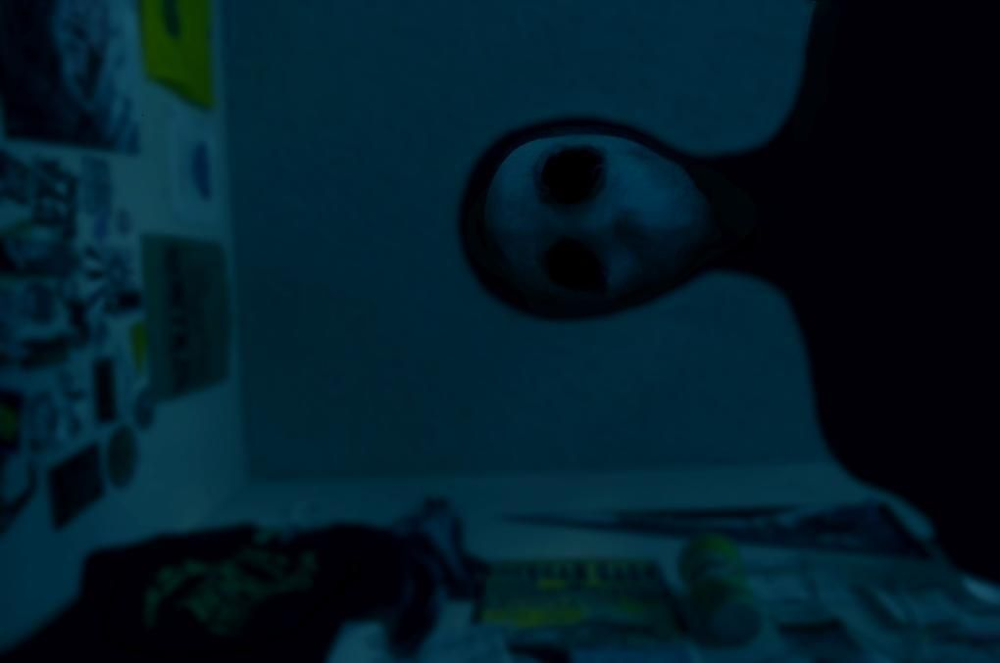

Se escuchaban gritos provenientes del sótano, pero la puerta estaba cerrada con llave y no había manera de abrir. Después de unos minutos, los gritos cesaron y se escucharon pasos acercándose a la puerta. Al abrir, solo había oscuridad y un frío escalofriante que recorrió todo mi cuerpo. Desde entonces, cada noche siento una presencia en la habitación y sé que nunca estoy sola.